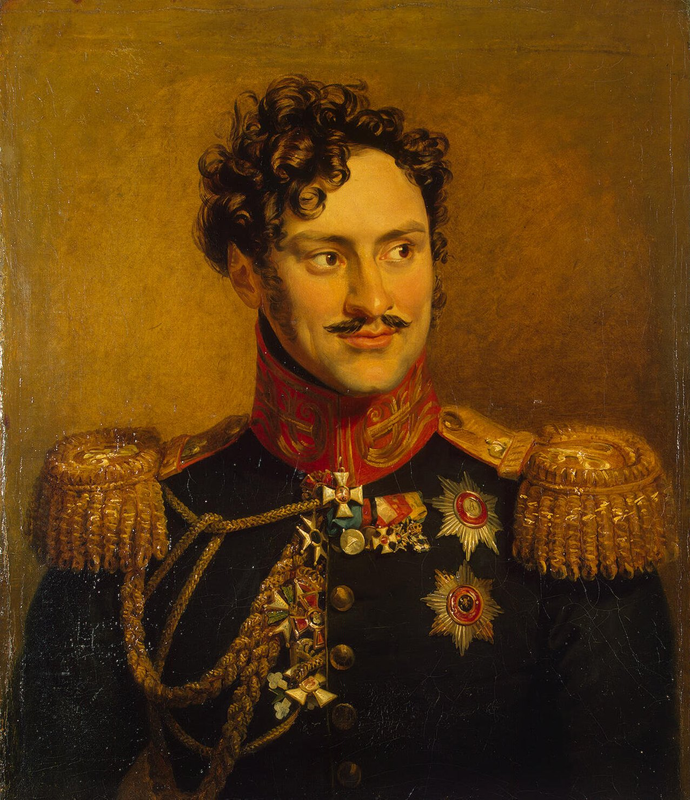
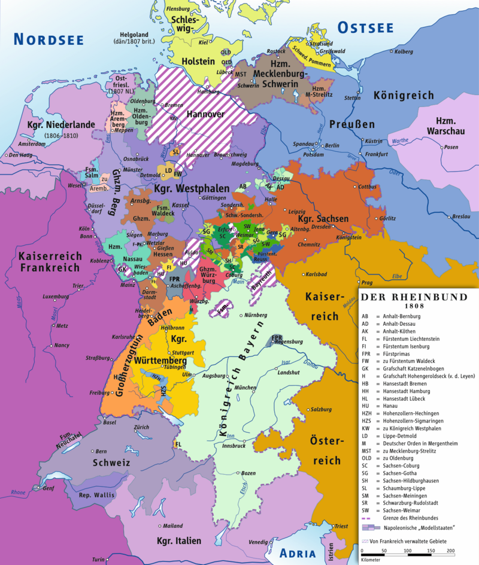
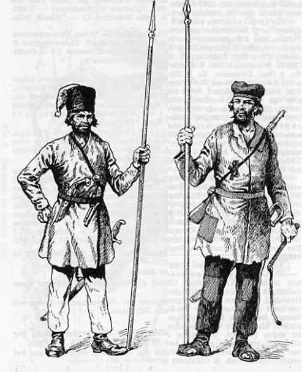
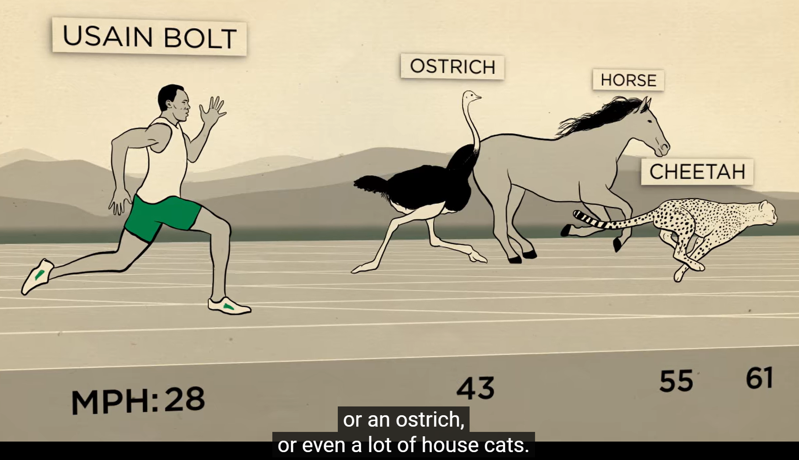
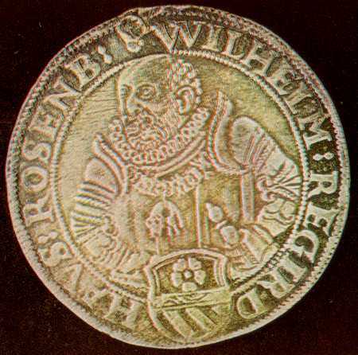

바이에른의 배신 (11) - 제롬의 무기고
게시: 2024-10-21T06:30:10+09:00
바이에른이 오스트리아와 전향 협상을 한창 진행 중이던 9월 중순, 제1선인 작센 저 후방에서 사건이 하나 벌어집니다. 당시 27세이던 러시아의 체르니셰프(Alexandre Ivanovich Chernyshev) 장군은 베르나도트의 북부방면군 소속이었는데, 달랑 3천의 기병들, 즉 코삭 기병 5개 연대(각 연대는 대략 500명)와 정규 기병 6 개 대대(squadron, 각 squadron은 대략 120명)에 1개 기마포병대(4문)만 이끌고 9월 14일 엘베 강을 건넌 것입니다. 이렇게 코삭 기병대가 주축이 된 러시아군 부대가 프랑스군 후방에 침투하여 온갖 노략질로 후방 통신과 보급을 위협하는 일은 늘상 일어나는 일이었습니다. 그러나 이렇게 수천 단위의 부대가 하나로 뭉쳐서 움직이는 일은 드물었고, 특히 이들에겐 명확한 목적지가 있었다는 점이 평범한 유격대와는 달랐습니다. 이들의 목적지는 바로 카셀(Kassel)이었습니다.

(알렉산드르 체르니셰프의 초상화입니다. 전형적인 모스크바 귀족 집안 출신인 그는 틸지트 조약에서 러시아가 나폴레옹과 동맹을 맺은 뒤 나폴레옹에게 파견된 짜르의 연락 장교로서 사실상 외교관으로 활약했습니다. 1786년 생으로서 젊고 영리한 데다 몸까지 좋아서 전형적인 엄친아였던 그는 나폴레옹을 비롯한 모든 이들의 호감을 샀습니다. 제5차 대불동맹전쟁 당시 그는 아스페른-에슬링 전투와 바그람 전투 등에서 줄곧 나폴레옹의 곁을 지켰고, 그 덕에 바그람 전투 이후 나폴레옹으로부터 레종도뇌르 훈장을 받기도 했으며, 알렉산드르와 나폴레옹 사이를 개인적으로 이어주는 핵심 역할을 수행했습니다. 그는 1813년 당시 27세의 한창 나이였고, 이미 러시아 육군 소장 계급을 달고 있었는데, 이는 빈칭게로더(Ferdinand von Wintzingerode) 덕분이었습니다. 1812년 프랑스군에게 사로잡힌 빈칭게로더가 모스크바에서 프랑스로 이송되고 있을 때 유격대를 이끌고 그를 구해낸 것이 바로 체르니셰프였던 것입니다. 그는 전후에도 승승장구하여 훗날 국방부 장관까지 올랐고, 크림 전쟁 패배의 책임을 지고 1856년에 물러났습니다.) 카셀은 바로 나폴레옹의 막내동생 제롬의 베스트팔렌 왕국(Königreich Westphalen)의 수도였습니다. 아무리 나폴레옹의 주력군이 작센 수도 드레스덴 일대에 모여있고 또 9월 6일 덴너비츠(Dennewitz) 전투에서 네의 베를린 방면군이 완패했다고 하더라도, 엘베강 최전선에서 카셀까지는 약 260km 떨어진 먼 거리로서 정말 깊숙한 후방이라고 할 수 있는 곳이었습니다. 일시적인 유격전이 아니라 이렇게 3천의 기병을 쏟아붓기엔 너무 위험한 작전 아니었을까요?

(베스트팔렌 왕국은 영어로는 Kingdom of Westphalia라고 부릅니다. 이는 프랑스어 표기인 Royaume de Ouestphalie (우에스트팔리)를 거의 그대로 가져온 것인데, 프랑스어로 서쪽이 Ouest이기 때문에 이렇게 표기했다고 합니다. 독일어로도 West는 서쪽이거든요. 그러나 현대 프랑스어에서는 독일어 원어를 존중하여 Westphalie라고 표기한다고 합니다. 어느 장단에 맞춰 표기하고 읽어야 할지 난감하긴 하네요.)

(체르니셰프가 어디서 엘베강을 건넜는지는 불분명합니다만, 로슬라우 인근에서 건넜다고 해도 카셀까지는 거의 230km에 달하는 먼 거리입니다. 저 일대는 모두 프랑스군의 홈그라운드라는 것을 생각하면 정말 대담한 작전이었습니다.)

(흔히 러시아 코삭 기병이라고 하면 1900년대 초반 러시아 로마노프 왕가를 지키던 근위대 소속 코삭들의 멋진 제복을 생각하기 쉽지만, 나폴레옹의 병사들이 맞닥뜨렸던 코삭들은 거의 산적에 가까운 수준의 복장을 하고 있었고, 그 창도 그냥 긴 막대기 끝에 녹슨 못을 박아놓은 수준이었다고 합니다. 러시아군은 이들을 정규군 보병 대열에 돌격시키는 일은 전혀 시도하지 않았는데, 이유는 이들이 그런 단단한 적군 진영을 향해서는 돌격을 거부했기 때문이었습니다.)
베르나도트와 체르니셰프가 이 작전이 매우 해볼 만한 것이라고 판단한 것에는 이유가 있었습니다. 라인연방의 독일 소국들 중에는 바이에른처럼 초기부터 나폴레옹과 뜻을 함께 한 나라도 있었지만 상당수는 1807년 프로이센이 무너지면서 반강제로 연방에 가입한 나라들이었습니다. 특히 베스트팔렌은 틸지트 조약에서 빼앗은 프로이센의 영토에 하노버와 브라운슈바이크, 헤센 등의 지역을 합하여 급조한 근본없는 나라였고, 그 주민들 상당수는 여전히 친프로이센 정서를 가지고 있었습니다. 만약 제롬의 통치가 나폴레옹의 바람처럼 독일 민중을 더 잘 살게 만들어주는 선진적 입헌군주정이었다면 이야기가 좀 달라졌을 수도 있었습니다만, 제롬은 그저 겉멋만 들린 철부지 애송이에 불과했습니다. 특히나 1812년 러시아 원정을 준비하는 과정에서 많은 사람과 물자, 돈을 갹출당헤야 했던 베스트팔렌 주민들은 국왕 제롬을 꼴보기 싫어했고, 그 원정이 대실패로 끝나고 러시아군과 프로이센군이 독일 해방을 위해 엘베강 동쪽까지 몰려왔다는 소리에 들떠 있던 상태였습니다. 과거 프랑스 제국의 원수 시절 주로 북부 독일쪽을 관장했던 베르나도트는 물론, 틸지트 조약 이후 나폴레옹에게 파견된 러시아측 연락 장교였던 체르니셰프는 베스트팔렌 지역의 반나폴레옹 정서를 잘 이해하고 있었습니다. 그들은 약간의 병력을 투입하면 베스트팔렌 지역에서 독일인들의 반프랑스 봉기를 이끌어내기를 기대했던 것입니다. 실제로 체르니셰프의 기병대는 엘베강을 건넌 뒤에도 거의 아무런 저항에 부딪히지 않았고 마치 무인지경을 가듯 진격을 계속하여 9월 29일 카셀에 나타날 수 있었습니다. 그래도 카셀은 베스트팔렌 왕국의 수도이자 제롬 보나파르트가 지키고 있는 곳이었는데, 기병대만으로 이루어진 체르니셰프의 부대가 고작 4문의 대포로 카셀의 성벽을 뚫을 방법이 있었을까요? 고대 스파르타의 현인 리쿠르구스는 '사람으로 쌓은 성벽이 벽돌로 쌓은 성벽보다 튼튼하다'라는 말을 남겼는데, 그 말을 입증하듯 벽돌로 쌓은 성벽은 제롬을 지켜주는데 아무런 도움이 되지 않았습니다. 체르니셰프의 기병대가 나타나자 카셀 인근의 헤센 주민들은 폭동을 일으켜 제롬의 프랑스 병사들을 쫓아냈고, 자신이 안전한 후방에 있다고 생각하던 제롬은 이 소식에 경기를 일으키고는 일찌감치 카셀을 버리고 도주했습니다. 제롬은 도망치면서 알릭스(Allix)라는 장군을 수비대 대장으로 남기고 갔는데, 알릭스도 딱 하루를 대치하다 항복할 수 밖에 없었습니다. 카셀 주민들이 폭동을 일으켜 알릭스의 저택까지 쳐들어왔기 때문이었습니다.

(체르니셰프의 기병대는 엘베강을 9월 14일에 건너서 29일 카셀에 입성했으니 하루에 약 18km씩 전진한 셈입니다. 이건 당시 일반 보병대의 전진 속도와 별 차이가 없지 않나요? 맞습니다. 이건 경보병도 아니고 근위대도 아닌, 정말 어중이떠중이를 모아놓은 일반 보병부대의 행군 속도와 비슷하거나 오히려 약간 떨어지는 속도입니다. 프랑스군 보병부대가 러시아 스몰렌스크로 진격할 때의 속도가 일일 평균 24km였고, 나폴레옹이 엘바섬에서 탈출하여 프랑스 남해안에 상륙한 뒤 파리로 진격할 때 초반 1주일의 행군 속도는 일일 평균 60km가 넘었습니다. 실은 역사적으로도 기병대의 전진 속도는 보병부대보다 처지는 경우가 많았고, 실제로 100km 이상의 거리를 이동할 때는 인간이 말보다 더 빠르다고 합니다. 체르니셰프의 기병대도 초기에는 하루에 85km를 전진했으나, 결국 말들이 지친 이후에는 속도가 확 떨어졌던 것입니다. 아직 창도 활도 만들지 못했던 원시시대의 인간이 네 발 달린 동물을 사냥한 방법이 바로 저런 지구력이었다고 하네요. 무조건 동물을 며칠이고 추격하다보면 결국 동물이 지쳐 쓰러진다는 것입니다. 인간의 그런 장거리 지구력의 근원은 무엇일까요? 바로 땀이라고 합니다. 인간은 다른 동물들에 비해 땀샘이 매우 발달한 편이고, 특히 가죽에 털이 거의 없기 때문에 냉각 시스템이 매우 우수한 편이라고 하네요.) 물론 나폴레옹의 제국이 이렇게까지 무력하게 무너져 내린 것은 아니었습니다. 불과 3일 뒤, 제롬이 프랑스 지원 병력을 끌고 돌아왔고, 이미 라인연방 후방 교란이라는 목적을 달성한 체르니셰프는 작센 전선의 전황에 있어 별다른 전략적 가치가 없던 카셀을 버리고 후퇴했습니다. 이 카셀 점령과 후퇴는 너무나 번개 같이 이루어져, 카셀이 연합군에게 해방되었다는 소식을 접한 원래 주인인 헤센 대공 빌헬름 1세(Wilhelm I., Kurfürst von Hessen)가 덴마크의 망명지에서 되돌아왔을 때는 10월 19일 라이프치히 전투에서 승리한 러시아군이 제2차로 다시 카셀을 포위하고 있었다고 합니다. 이렇게 체르니셰프의 카셀 점령은 3일 천하에 그쳤지만, 큰 충격파를 나폴레옹 제국 곳곳에 퍼뜨렸습니다. 그 충격파가 가장 큰 효과를 일으킨 곳은 바이에른의 리드(Ried)였습니다. 오스트리아와 전향 조건을 협상 중이던 바이에른에게 자신들보다 더 후방이라고 생각했던 베스트팔렌 왕국의 수도가 함락되었다는 소식은 상당한 충격을 주었던 것입니다. 처음엔 중립을 지키겠다는 조건을 고집하던 바이에른도 카셀 점령 소식이 알려진 뒤에는 버티지 못하고 연합군 편에서 참전하는 조건으로 10월 8일 리드 조약을 맺게 됩니다. 또한 제롬의 카셀 궁전, 즉 나폴레온회허(Napoleonshöhe) 궁전을 점령하고 탈탈 털었던 러시아군은 거기서 각종 군수품과 함께 7만9천 탈러(thaler)의 은화까지 노획할 수 있었는데, 다만 그 궁전 무기고에도 머스켓 소총 등의 총기류는 전혀 없었습니다. 즉 1813년 나폴레옹은 제국의 모든 무기를 그야말로 바닥까지 긁어내어 작센 전선으로 향했던 것입니다. 뜻하는 바는 여기서 무너진다면 나폴레옹은 재기할 수 없는 상태였다는 것이었습니다. 이런 사정은 연합군에게 속속 전달되었습니다.
(카셀의 빌헬름회허 궁전(Schloss Wilhelmshöhe, '빌헬름 언덕의 궁전'이라는 뜻)입니다. 원래부터 헤센 공작 거주지였던 이 곳에 신고전주의 양식의 이 멋진 궁전을 1798년 완공한 것은 헤센 대공 빌헬름 1세(Wilhelm I., Kurfürst von Hessen)였습니다. 그러나 이 양반은 그야말로 죽 쑤어 개 준 꼴이 되었습니다. 1807년 베스트팔렌 왕국이 창건되면서 제롬 보나파르트가 이 궁전을 자신의 왕궁으로 삼고 나폴레온회허(Napoleonshöhe) 궁전으로 이름을 바꿨기 때문입니다. 그 동안 빌헬름 1세는 저 좋은 궁전을 빼앗기고 덴마크에서 난민 생활을 해야 했고, 1813년 말에나 돌아올 수 있었습니다. 역사의 아이러니는 여기서 끝나지 않습니다. 1870~71년의 보불전쟁 당시 스당(Sedan) 전투에서 항복한 나폴레옹 3세가 잠깐 포로 생활을 한 곳이 바로 여기 빌헬름회허 궁전이었습니다.)

(당시 독일 지역에서 유통되던 은화인 탈러(thaler)는 프로이센 탈러, 작센 탈러, 헤센 탈러 등등 종류가 매우 많았고 베스트팔렌 탈러도 있었는데 그 은 함량은 같은 화폐라도 시대에 따라 각각 달랐습니다. 프로이센 탈러에는 대략 은 16g이 포함되어 있었다는데, 현재 가치로 따지면 대략 1탈러는 대략 3만2천원 정도입니다. 그러니까 7만9천 탈러는 우리 돈으로 대략 25억원 정도입니다. 당시 군마 한 마리 가격이 대략 현재 가치로 1천만원에 가까웠으니, 대략 260마리의 군마를 살 수 있는 돈이고 꽤 큰 돈이라고 할 수 있습니다. 이건 16세기 후반 보헤미아의 왕 로젠베르크(Rosenberg)가 만든 탈러 은화입니다.) 라인연방국들 중 가장 덩치가 클 뿐만 아니라 가장 충성도가 높았던 바이에른의 배신은 나폴레옹에게도 큰 충격을 주었지만 다른 라인연방국들에게는 더 큰 충격으로 다가왔습니다. 원래 라인연방으로 뭉치게 된 이유 중 하나가 자신들의 영토를 탐내던 프로이센과 오스트리아로부터 자신들을 지키기 위해서였는데, 현재 승기를 잡은 것이 분명해보이는 연합국들은 나폴레옹을 패배시킨 뒤 자신들을 가만히 놔두지 않을 것이 분명했습니다. 그런데 바이에른처럼 먼저 전향할 수록 연합국의 영토 욕심으로부터 안전하다는 것이 드러나게 되자, 남은 라인연방국들도 흔들릴 수 밖에 없었습니다. 그 결과가 나폴레옹에게 너무나도 뼈아프게 드러난 것은 바로 대망의 라이프치히 전투에서였습니다. 이제 이야기는 라이프치히로 향합니다. Source : The Life of Napoleon Bonaparte, by William Milligan Sloane Napoleon and the Struggle for Germany, by Leggiere, Michael V With Napoleon's Guns by Colonel Jean-Nicolas-Auguste Noël https://it.wikipedia.org/wiki/Aleksandr_Ivanovi%C4%8D_%C4%8Cerny%C5%A1%C3%ABv https://en.wikipedia.org/wiki/Kassel https://marksrussianmilitaryhistory.info/Cossacks1812/KosakenFormationen1812.html https://en.wikipedia.org/wiki/J%C3%A9r%C3%B4me_Bonaparte https://en.wikipedia.org/wiki/Kingdom_of_Westphalia https://www.napoleon.org/en/history-of-the-two-empires/timelines/1813-and-the-lead-up-to-the-battle-of-leipzig https://en.wikipedia.org/wiki/Westphalian_thaler https://www.businessinsider.com/how-humans-evolved-to-be-best-endurance-runners-2018-3 https://www.reddit.com/r/running/comments/3pkc6h/human_vs_horse_marathon/